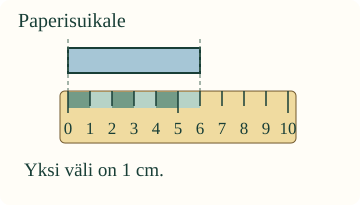
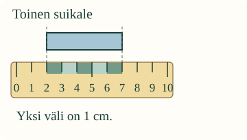
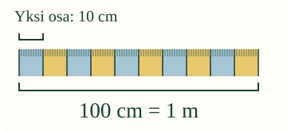

Senttimetri vai metri?
Loikka tarvitsee kuuden sentin paperisuikaleen. Mistä mitta alkaa?
Tunnen senttimetrin ja metrin. Luen pituuden viivoittimelta.
Yksi väli on senttimetri
Katso oikeaa viivoitinta. Numeroiden 0 ja 1 väli on yksi senttimetri. Sen merkki on cm. Aseta nolla paperisuikaleen alkuun.

Nollasta kuuteen on kuusi väliä. Suikale on 6 cm pitkä.
Loppunumero voi hämätä

Tämä suikale on 5 cm, ei 7 cm. Laske alku- ja loppupään välit. Voit myös siirtää viivoittimen nollan alkuun.
Metri on sata senttiä

Metri merkitään m. Yksi metri on sata senttimetriä: 1 m = 100 cm. Siksi 1 m nauha on pidempi kuin 80 cm nauha.
Ennusta: muuttuuko suikaleen pituus, jos siirrät vain viivoitinta?
Kokeile ja korjaa
Apua
Suikale pysyy paikallaan. Viivoitin siirtyy yhden sentin välin kerrallaan. Nollan kohdistaminen on apu: myös välien laskeminen muusta alkukohdasta käy. Metrin nauhan voit ilmoittaa 1 m tai 100 cm.
Tutki lisää ja kokeile ilman ruutua
Mitatkaa aikuisen kanssa sama paperisuikale kahdesta eri alkukohdasta. Mitkä numerot muuttuvat? Mikä pysyy samana? Etsikää metrin mitta ja verratkaa siihen lyhyempää nauhaa. Metrejä voi käyttää myös lyhyen pituuden ilmoittamiseen, mutta silloin voi tarvita luvun osia; tässä käytämme kokonaisia senttimetrejä tai kokonaisia metrejä.
Opettajalle: tavoite, tuki ja rajat
Vuosiluokat 1–2; concept/atomic. Tavoite: metri ja senttimetri pituuden yksikköinä. Vaadittu JA-ryhmä M-MEAS-02 ja M-MEAS-01; ei muita pakollisia portteja. Aikuinen voi lukea. Muotojen nimeämistä, puhetta, pakollista napautuslaskentaa tai vähennyslaskun algoritmia ei vaadita.
Viivoittimen lukusuora on sovittu asteikko: kokonainen väli on yksi senttimetri. Näytön pikselit eivät ole fyysisiä senttimetrejä. Metrikuvan sata väliä on ryhmitelty kymmenen sentin osiin; merkintä 100 annetaan tukena, sitä ei edellytetä itsenäisesti laskettavaksi. Varsinaisen paperin mittaaminen opitaan oikeilla välineillä erikseen.
Ruutumalli tarkistaa suikaleen pituuden, ei käytettyä mittausstrategiaa. Oikea välien laskeminen hyväksytään myös ilman nollan kohdistamista. Viivoittimen siirto ja apuvälit säilyttävät saman pituuden; palaute ei väitä vanhaa loppunumeroa nykyiseksi. Metrin nauhalle hyväksytään 1 m ja 100 cm. Millimetrit, desimaalit ja yleiset yksikkömuunnokset jäävät tämän harjoituksen ulkopuolelle.
Ei tallennusta, pisteitä tai hallintamerkintää. Tuettu ruutuvastaus ei todista fyysistä mittaamista, itsenäisyyttä, säilyvyyttä tai oppimisvaikutusta.
Lopuksi
Miksi viivoittimen loppunumero ei aina kerro esineen pituutta?